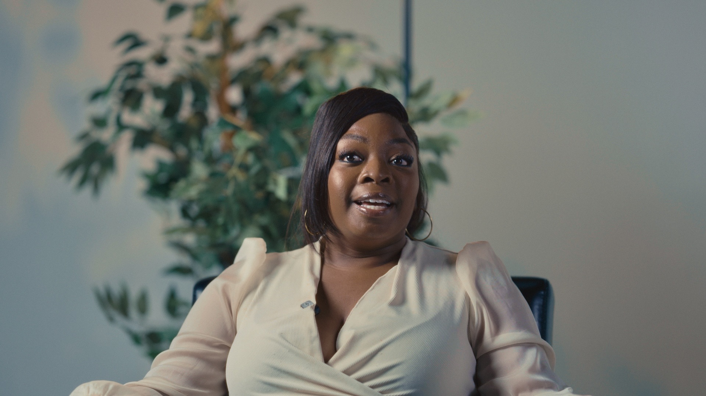
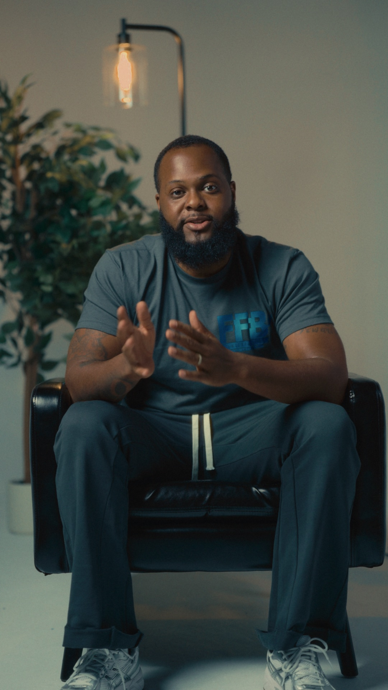
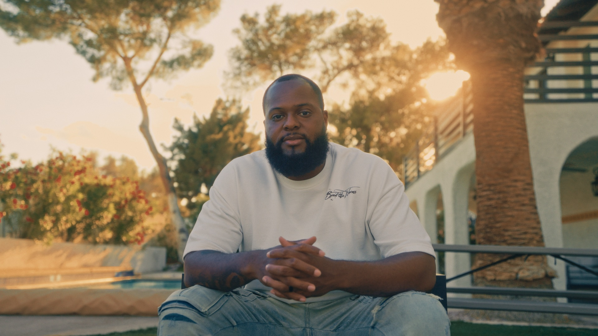
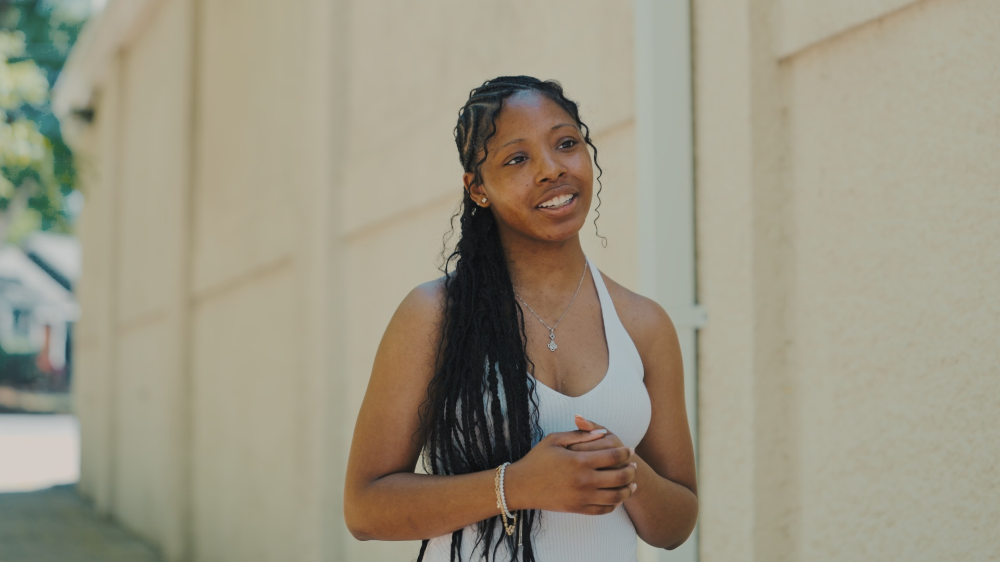

Editorial planning
We identify the ideas, moments, and offers that deserve a clear place in the month ahead.
A focused monthly production relationship for businesses that want a consistent visual presence without carrying the content machine alone.

Ongoing work creates a useful rhythm: identify what matters this month, make the most of each production day, and deliver assets your team can actually put to work.
We identify the ideas, moments, and offers that deserve a clear place in the month ahead.
Efficient photo and video capture built around your people, locations, and operating schedule.
A planned set of edited assets for websites, social, campaigns, recruiting, and customer education.
Every month does not need a brand-new campaign. It needs a reliable way to capture the people, expertise, and progress already moving your business forward.



Build a content system that makes it easier to stay visible, useful, and recognizable long after the shoot day is over.
See if it is a fitThis is a fit for founders, professional practices, service businesses, and growing teams that already have momentum but need a more reliable way to turn the work into content.
Ongoing content engagements start at $5,000 per month. Scope depends on production frequency, locations, deliverables, and the level of creative direction needed.
No. Motion Visual Media focuses on the strategy, production, and delivery of visual content. Publishing and channel management can be discussed separately when useful.
Yes. A focused film or photography project can be the right first step before deciding whether an ongoing relationship makes sense.